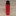

燃料
酒精爐可以燃燒不同種類的酒精，甲醇、乙醇、異丙醇，要融合這些燃料甚至加入其他材料製作焰色反應也可以。
索引
甲醇
就是工業酒精，五金行那種粉紅色加了染色劑的也是，化工行可以買到透明的，一般會說可以用在酒精燈煮食。
揮發快，燃燒點火快速，但熱值稍低，相比乙醇可能需要更多量才能燒開水。
有毒，燃燒不完全會產生刺鼻刺激眼睛的煙霧，高山上氧氣較少更是容易燃燒不完全，不建議使用純甲醇來燃燒。
拿來混合乙醇或焰色反應溶液的話佔比10%以下幫助點火即可。
一般來說明亮處燃燒幾乎看不見火焰，黑暗處燒起來為藍色火焰，幾乎不太燒黑鍋底。
乙醇
最推薦燃燒的燃料，一般化工行賣的幾乎都有加苦味劑不能喝。
95%乙醇易燃，適用於多數酒精爐。
一般消毒酒精使用75%乙醇與25%水混合，使用75%酒精燃燒較溫和，燃燒時間較延長，但要注意算酒精比例，避免燒不開水。
燃燒顏色依據爐具與距離鍋面高低等有差異，好的酒精爐與爐架搭配等等燃燒起來會是藍色火焰，爐具火力太強燃燒太旺，或是使用吸附材質燃燒（如陶瓷纖維）則容易產生黃火，黃火容易黑鍋。
異丙醇
最不推薦燃料，除非爐具有經過設計，可以參考罐頭酒精爐 (墊高可燒異丙醇)。
一些乾洗手也是混異丙醇消毒。
燃燒除非進氣順暢，空氣燃燒非常完全，且爐面距離鍋底高度有設計過有機會產生藍火，不然幾乎就是黃火黑鍋。不想刷鍋子就不要想用異丙醇燒。
綠焰精靈
為了讓火焰增添色彩，增加火焰存在感與兼具美觀性，並且還要燒起來低毒性，決定使用硼酸調製燃料。
配方
80%乙醇、5%甲醇、15%硼酸水溶液體。
硼酸水溶液體調製
使用50度溫水以50ml水對比3~5公克硼酸，攪拌到不能再溶解，變成硼酸飽和水溶液，然後等待完全降溫才可進行酒精混合。
實際燃燒
此次燃燒燃料比例調配為80%乙醇、10%甲醇、10%硼酸水溶液體，乙醇與甲醇比例太高揮發太高火焰暴衝，後續調整拉高硼酸水溶液比例，增加水分以減緩燃燒速率。
燒起來為藍綠色火焰，非常好看。火焰較高時，綠色的部分會比較明顯。

硼酸還是有些毒性，燒水務必蓋上鍋蓋，避免含硼酸的蒸氣滲入，燃燒後鍋壁可能會有白色硼酸結晶，請注意不要碰到食物，並且徹底清潔鍋子。
低鈉鹽溶液測試
加入鹽巴是讓火焰最簡單產生明亮橘黃色的最簡易方法，低鈉鹽帶有鉀離子會讓火焰偏紅。
使用50度溫水以50ml水對比16公克鹽巴，加太多了全部都是漂浮物，沒有等它沉澱就混合酒精，大事不妙。
此次燃燒燃料比例調配為70%乙醇、10%甲醇、20%低鈉鹽水溶液體。
低鈉鹽水溶液全部沉澱到底部（酒精較輕）。
燃燒前搖一搖才燒，燒起來為肉眼看偏橘紅色(相機拍攝都偏黃，照片已經調色到接近肉眼顏色)。
食鹽太多的下場，爐具底部與孔洞皆有食鹽結晶，長期下來會造成堵塞，鹽巴比例應該要拉到極低比較好，並且避免使用毛細爐及小燃燒孔的加壓爐來燒有加鹽的燃料
後續有機會再測試只燒取上層酒精溶液的狀況。